Decision Tree model eka — section eken section
Notebook eke (notebooks/02_decision_tree_model.ipynb) hama section ekakma mokakda karanne, ai ehema kale, saha result eka mokakda kiyala Sinhala + English terms walin. Section ekak gane “Evaluation eke kiyanna” box ekakuth thiyenawa.
(± 0.008)
0Project overview — api karanne mokakda?
Network eke yana flow ekaka (connection ekaka) time-based features 21k balala, eka mona wage traffic ekakda kiyala predict karana eka. Udaharana: CHAT, VOIP, STREAMING, FT (file transfer), P2P, MAIL, BROWSING. Me 7 ma VPN ekak haraha yanawada nadda kiyalath wenas karanna one nisa total 14 classes.
Meka multi-class classification problem ekak. Dataset eka ISCX VPN-nonVPN 2016, Scenario B.
- Team eka kalin Logistic Regression try kala. Eka linear model ekak. Me data eke class athara boundary non-linear nisa eken macro F1 eka 0.30–0.35 witharai awe.
- Decision Tree eka if / else rules igena gannawa (udaharana: “mean_fiat ≤ 7212 nam saha duration ≤ 10,062,553 nam …”). Ithin non-linear patterns allaganna puluwan.
- Feature scaling one na. Interpretable: model eka gaththa decision eka apita kiyawala therum ganna puluwan.
- Training eka godak fast. Ithin hyperparameter combinations godak try karanna puluwan.
1Import libraries
One karana libraries okkoma load karanawa:
pandas,numpy: data tables saha numbers handle karannamatplotlib,seaborn: charts adinnasklearn.tree:DecisionTreeClassifier,plot_tree,export_textsklearn.model_selection:StratifiedGroupKFold,RandomizedSearchCV,cross_validate,learning_curve,validation_curvesklearn.metrics: accuracy, F1, MCC wage scoressklearn.inspection.permutation_importance: feature importancejoblib: model eka file ekakata save karanna
Okkoma imports mulinma ekama thanaka thiyena nisa notebook eka pirisidui. Warnings off kale output eka clean wenna.
2Settings and folders
| Setting | Value | Theruma |
|---|---|---|
TIMEOUT | 15 | Main work eka karanne 15-second time window data walin |
TASK | "14class" | Normal 7 + VPN 7 = 14 classes |
SEED | 42 | Random seed eka. Run karana hama parama ekama result eka enawa (reproducibility) |
N_FOLDS | 5 | 5-fold cross validation |
N_ITER | 150 | Tuning eke try karana random settings gana |
FEATURES | 21 | Time windows 4 tama common features 21 |
Ita passe results save karana folders auto-create karanawa: reports/results/decision_tree/ athule figures/, tables/, model/.
- 15s: data godak thiyenne me window eke (train rows 14,459). Team ekath main dataset eka widiyata 15s use kala, ithin compare karanna lesi.
- Seed eka fix karala nisa examiner kenek run kalath ekama numbers enawa.
- Settings okkoma ekama thanaka thiyena nisa wenas karanna lesi (udaharana:
TIMEOUT = 30dala aye run karanna puluwan). - Notebook eka
notebooks/athule run kalath, project folder eke run kalathPROJECT_ROOTeka hoyagannawa.
3Load the data
Team eka kalin hadapu processed files dekak load karanawa: 14class_15s_train.csv saha 14class_15s_test.csv. Ita passe X (features 21) saha y (label) wenas karanawa.
| Rows | Features | |
|---|---|---|
| Train | 14,459 | 21 |
| Test | 3,615 | 21 |
Missing values 0. Conflict rows: train 81, test 19.
group_id saha conflict_flag
group_id: features samaana rows walata ekama id eka. Cross validation eke group eka use karanne data leakage nawaththanna. Ekama flow eka train fold ekeyi validation fold ekeyi dekema thibboth model eka “mathaka thiyagena” score eka boruwata wadi wenawa.conflict_flag: features samaana unath label wenas rows. Ewa kisima model ekakata 100% hari karanna be. Team eka ewa ain karanne nathuwa flag karala thiyenawa, api ewa count eka witharak pennanawa.- Team eka duplicates ain karala, group-aware 80/20 split ekak karala thiyenne. Ithin test set eka saha train set eka athara overlap na (group overlap = 0).
4Class balance
Class ekakata rows keeyak thiyenawada kiyala table ekak saha bar chart ekak hadanawa. (class_counts.csv, class_counts.png)
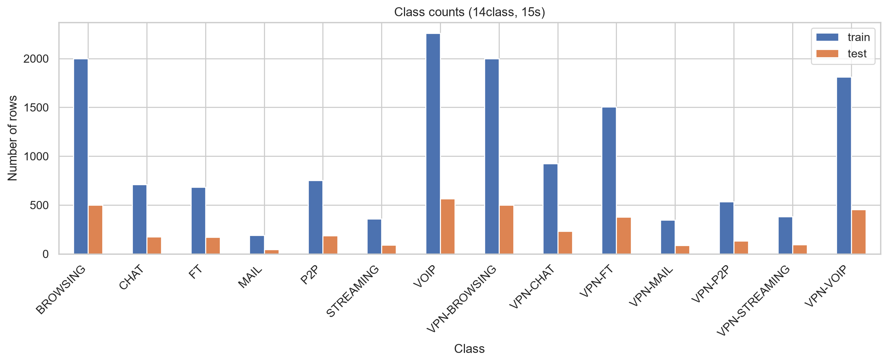
Data eka imbalanced. Udaharana: VOIP wage classes walata rows 2,000+ thiyenawa, eth MAIL ekata 249 witharai.
Imbalanced data walata accuracy eka rawattanna puluwan: model eka loku classes hari karala podi classes waradunath accuracy eka hondata penenawa. E nisa api main metric eka widiyata macro F1 gaththa. Eka hama class ekatama samaana weight ekak denawa.
5Features balanna (no scaling)
Feature 21 tama describe() summary eka (mean, std, min, max …) gannawa. feature_summary.csv eke save wenawa.
Features groups: fiat/biat (forward / backward inter-arrival time), flowiat (flow inter-arrival time), active/idle times, duration, flowPktsPerSecond, flowBytesPerSecond.
- Decision Tree eka karanne
feature ≤ thresholdwage split. Feature eka 1000 gunayak scale kalath split eka ekamai. Ithin StandardScaler one na (LogReg ekata nam one). - Samahara features wala
-1values thiyenawa. Team eka ewa investigate karala thiyagaththa nisa apith thiyagaththa. Tree ekata ewa wenama split ekakin handle karanna puluwan.
6Evaluation helper saha CV splitter
get_scores() function eka eka parata metrics okkoma calculate karanawa:
| Metric | Theruma (simple) |
|---|---|
| Accuracy | Predictions walin hari ewa keeyada |
| Balanced accuracy | Class ekin ekata recall eka gana, ewaye average eka |
| Precision | Model eka “X” kiyapu ewa walin keeyak ettatama X da |
| Recall | Ettatama X thibba ewa walin model eka keeyak allagaththada |
| F1 | Precision saha recall dekema harmonic mean eka |
| Macro F1 ★ | Class 14 ema F1 walata samaana weight dila average eka. Main metric eka |
| Weighted F1 | Class size eka anuwa weight karapu F1 |
| MCC | Matthews correlation coefficient. Confusion matrix eka mulumanin balana strong single score ekak (−1 sita 1) |
StratifiedGroupKFold(n_splits=5): data eka folds 5 kata kadanawa.
- Stratified: hama fold ekakama class percentages samaanai.
- Group: ekama
group_ideka folds dekakata yanne na (leakage na).
Hama thanakama ekama metrics saha ekama splitter eka use karana nisa baseline, tuned, LogReg okkoma fair widiyata compare karanna puluwan. Normal KFold ekak gaththoth leakage wenna puluwan, ithin group-aware version eka gaththa.
7Baseline Decision Tree
Default settings walin tree ekak hadala, training data eke 5-fold CV karanawa. Meka thamai api compare karana starting point eka.
| Train macro F1 | Validation macro F1 | Gap | |
|---|---|---|---|
| Baseline | 0.992 | 0.743 | 0.249 |
Tree depth 29, leaves 2,259.
Default tree eka hama leaf ekakma “pure” wenakan wadenawa. Ithin training data eka mathaka thiyagannawa (train ≈ 1.0), eth aluth data walata 0.74 witharai. Meka overfitting. Me nisa thamai tuning one wenne: tree eka limit karala general rules igena ganna salasanna.
8Hyperparameter tuning (RandomizedSearchCV)
RandomizedSearchCV eka settings combinations 150k random widiyata thoragena, ekak ekak 5-fold CV walin check karanawa. Ithin total 750 fits. Best eka thoragannne validation macro F1 eka anuwa (refit="macro_f1").
| Hyperparameter | Search karapu values | Theruma | Best |
|---|---|---|---|
criterion | gini, entropy, log_loss | Split ekak hondada kiyala manina widiya | gini |
splitter | best, random | Hama split point ekakma balanawada, random ewada | best |
max_depth | None, 5 … 30 | Tree eka keeyak gaburuta yanna puluwanda | 25 |
min_samples_split | 2, 5, 10, 20, 40 | Node ekak split karanna one aduma rows | 2 |
min_samples_leaf | 1 … 20 | Leaf ekaka thiyenna one aduma rows | 2 |
max_features | None, sqrt, log2, 0.5, 0.7 | Split ekakadi balana features gana | 0.5 |
class_weight | None, balanced | Podi classes walata wadi weight denawada | None |
ccp_alpha | 0 … 0.001 | Pruning strength: wadi unoth tree eka podi wenawa | 0.0002 |
- Me search space eke combinations ~600,000k witharai thiyenne. GridSearch eka okkoma try karanna ona nisa godak kal yanawa.
- Randomized search eka podi kalayakin hoda region eka hoyagannawa (research walin pennala thiyenawa grid ekata wada efficient kiyala).
- Tuning eka karanne training data eke CV walin witharai. Test set eka touch karanne na. Ithin final test result eka unbiased.
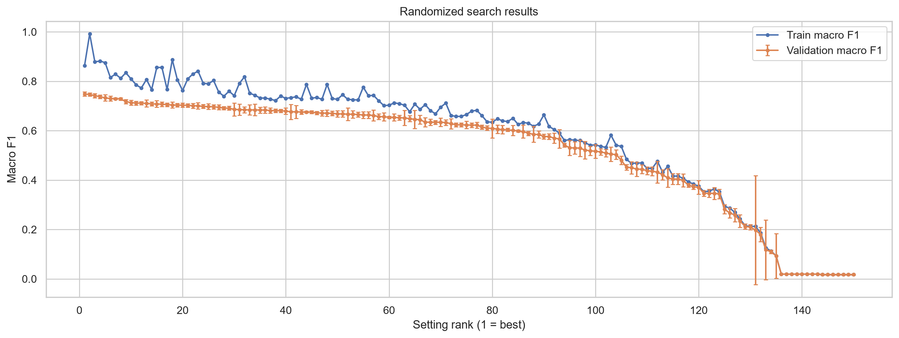
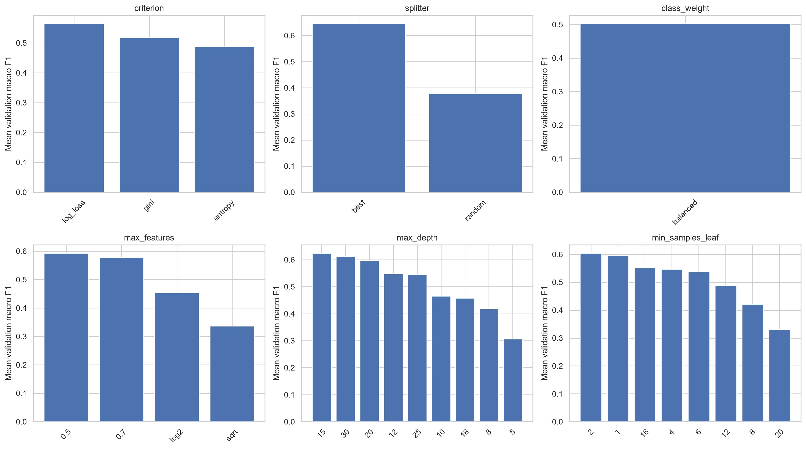
Best CV macro F1 = 0.749. 8.3 chart eken penenawa splitter="best" saha loku max_depth hondai kiyala, ekka podi min_samples_leaf ekak hondai kiyala. ccp_alpha = 0.0002 eken tree eka tikak prune wela overfitting adu wenawa.
9Best model eke cross validation
Best settings walin aye 5-fold CV karanawa. Me para hama fold ekema score eka wenama save karanawa (tuned_cv_folds.csv).
| Fold | 1 | 2 | 3 | 4 | 5 | Mean ± std |
|---|---|---|---|---|---|---|
| Val macro F1 | 0.759 | 0.745 | 0.756 | 0.737 | 0.744 | 0.749 ± 0.008 |
| Baseline | Tuned | |
|---|---|---|
| Validation macro F1 | 0.743 | 0.749 |
| Train macro F1 | 0.992 | 0.863 |
| Overfitting gap (train − val) | 0.249 | 0.114 |
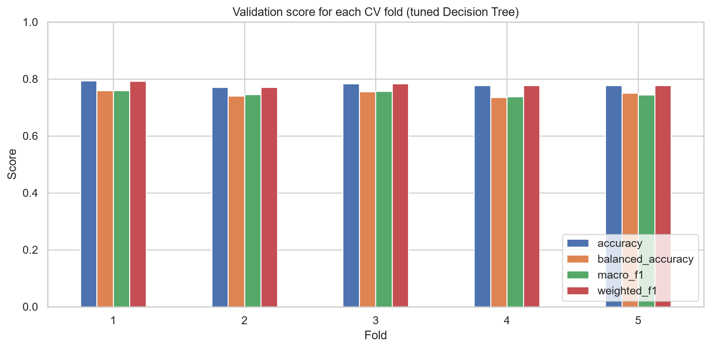
- Std eka 0.008 witharai. Folds 5 ma lagin lagatama samaanai, ithin model eka stable. Single decision trees samahara welawata unstable nisa me check eka wadagath.
- Tuning eken validation score eka tikak wadi una. Eth loku wasiya thiyenne overfitting gap eka bhagayakata wada adu wena eka (0.249 → 0.114).
10Learning curve
Training data eke 10% sita 100% wenakan kotas 10k gena model eka train karanawa. Hama para ekakadima train score saha validation score (CV) eka plot karanawa. Baseline ekatai tuned ekatai dekatama.
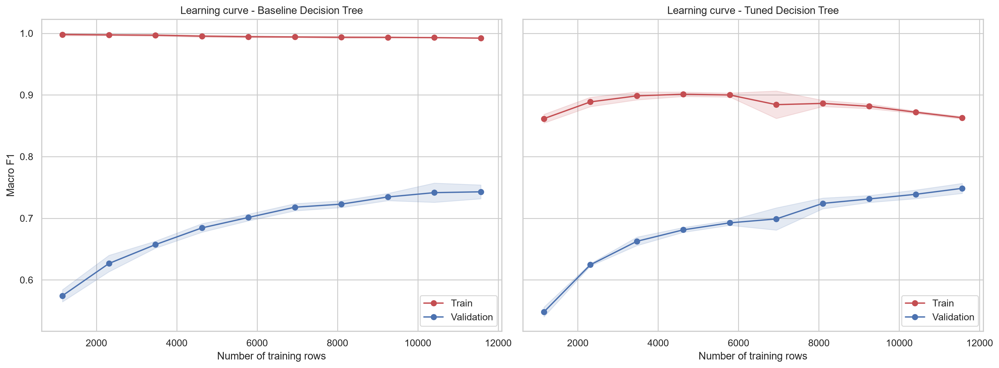
- Baseline: train line eka hama welema ≈ 1.0. Validation ekata wada loku gap ekak thiyenawa. Meka overfitting.
- Tuned: train line eka ≈ 0.86 ta bahinawa, gap eka podi wenawa. Tree eka mathaka thiyaganna eka adu wela.
- Dekema validation line eka thawa udata yanawa (0.55 → 0.75). Ithin thawa data thibboth model eka thawa hondai. Model eka thama data walin “saturate” wela na.
11Validation curves (max_depth, min_samples_leaf, ccp_alpha)
Validation curve ekak karanne eka hyperparameter ekak witharak wenas karala, anith okkoma best values wala thiyala, train saha validation score plot karana eka. Tree eke size eka control karana settings 3k balanawa.
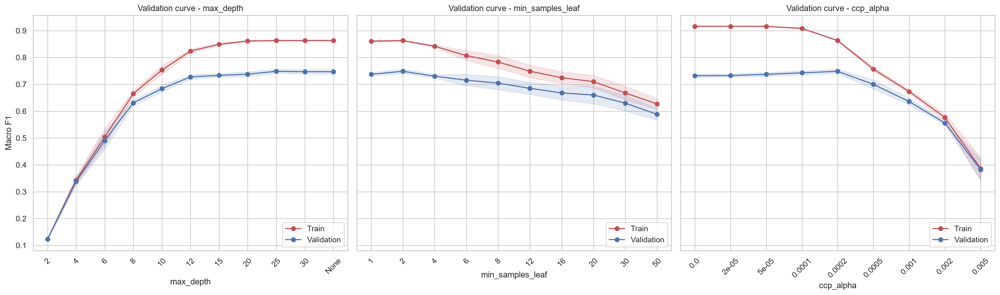
| Setting | Penena dewal |
|---|---|
max_depth | Depth 2 → val 0.12, depth 8 → 0.63. Podi depth walata underfitting. Depth 20–25 wala peak eka (0.749). Ita passe wenasak na. |
min_samples_leaf | 2 dee best (0.749). Ita wada wadi karanna wadi karanna score eka bahinawa (50 → 0.59). Ithin wadi leaf size eka underfitting. |
ccp_alpha | 0.0002 dee best (0.749). 0 dee train eka 0.92 (wadi overfit). 0.0005+ wala tree eka godak prune wela score eka adu wenawa (0.005 → 0.38). |
Meken bias–variance trade-off eka pirisiduwa penenawa: tree eka podi unoth underfit wenawa (high bias), loku unoth overfit wenawa (high variance). Tuning eken thoragaththa values “sweet spot” eke thiyena bawa me curves walin confirm wenawa.
12Final model train karala test karanawa
Best settings walin full training set eke (14,459 rows) final tree eka train karanawa. Ita passe test set eka ekaparai use karala evaluate karanawa. Compare karanna baseline ekath test karanawa.
| Metric | Tuned (train) | Tuned (test) | Baseline (test) |
|---|---|---|---|
| Accuracy | 0.870 | 0.778 | 0.793 |
| Balanced accuracy | 0.842 | 0.727 | 0.754 |
| Macro F1 | 0.843 | 0.727 | 0.754 |
| Weighted F1 | 0.870 | 0.778 | 0.793 |
| MCC | 0.855 | 0.752 | 0.769 |
| Tree depth / leaves | 22 / 585 | 22 / 585 | 29 / 2,259 |
Test set eke baseline eka (0.754) tuned ekata (0.727) wada tikak hondai. Meka waraddak newei:
- Settings thoragaththe CV walin witharai. Eka thamai hari kramaya. Test eka balala settings thoruwoth eka test-set leakage. CV eke tuned eka hondai (0.749 vs 0.743).
- Tuned tree eka 4 gunayak podi (leaves 585 vs 2,259), saha overfitting gap eka bhagayakin adui. Ithin eka simple, interpretable, reliable.
- Single decision tree ekak high variance model ekak. Data podi wenasakata score eka points 2–3 k wenas wenna puluwan. Wenasa podi (0.027) nisa meka normal variance eka.
13Class by class report
classification_report eken class 14 ema precision, recall, F1, support (test rows gana) gannawa.
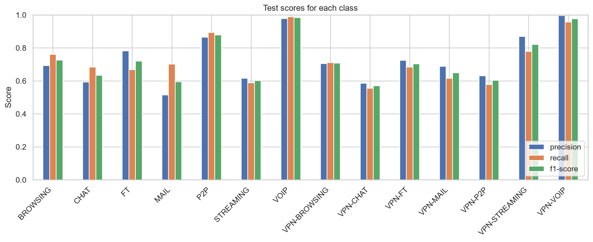
| Hondama classes | F1 | Amaruma classes | F1 |
|---|---|---|---|
| VOIP | 0.98 | VPN-CHAT | 0.57 |
| VPN-VOIP | 0.98 | 0.59 | |
| P2P | 0.88 | STREAMING | 0.60 |
| VPN-STREAMING | 0.82 | VPN-P2P | 0.60 |
- VOIP traffic eke packets regular, nithara enawa (voice call ekak). Ithin timing pattern eka pirisidui, allaganna lesi.
- MAIL, STREAMING wage classes wala rows adui (MAIL test rows 47). Ekka CHAT, MAIL, BROWSING wage ewaye timing patterns ekata samaanai.
- Meka thamai macro F1 eka (0.727) accuracy ekata (0.778) wada adu wenna hethuwa: podi classes amarui.
14Confusion matrix
Rows = ettatama class eka, columns = predict karapu class eka. Diagonal eke thiyenne hari predictions. Ewa nathi thana waradi. Versions dekak thiyenawa: counts saha normalized (row eka 1 ta divide karala, ithin diagonal eka = recall).
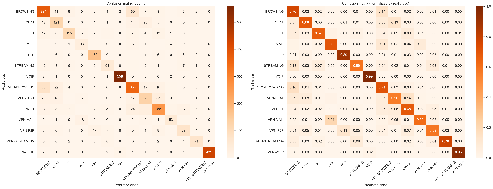
| Ettatama | Predict kale | Count | % of real class |
|---|---|---|---|
| VPN-BROWSING | BROWSING | 80 | 16.0% |
| BROWSING | VPN-BROWSING | 69 | 13.8% |
| VPN-CHAT | VPN-FT | 33 | 14.2% |
| VPN-FT | VPN-CHAT | 29 | 7.7% |
| CHAT | VPN-CHAT | 23 | 13.0% |
Loku waraddak thiyenne ekama app type eke normal saha VPN versions athara (BROWSING ↔ VPN-BROWSING). VPN eken traffic eka encrypt karata timing pattern eka godak wenas wenne na. Ithin time-based features witharak balala ewa wenas karana eka amarui. Ekka VPN athule CHAT ↔ FT wage app types ekata patalenawa.
15Feature importance
Widi dekakin balanawa:
- Impurity importance: tree eka athule feature eka split walin “impurity” (gini) eka keeyak adu kalada. Built-in, fast.
- Permutation importance: test set eke ekama feature ekak shuffle karala macro F1 eka keeyak bahinawada balanawa (repeats 10). Wadi drop ekak nam eka wadagath feature ekak. Meka wadi trusted, mokada eka test data eka mathai.
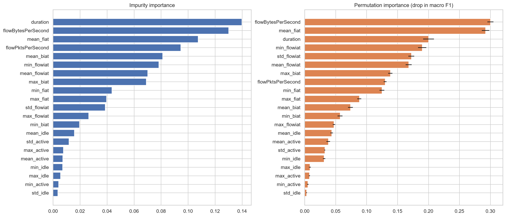
| Feature | Macro F1 drop | Theruma |
|---|---|---|
flowBytesPerSecond | 0.300 | Second ekakata yana bytes (bandwidth) |
mean_fiat | 0.292 | Forward packets athara average welawa |
duration | 0.200 | Flow eke mulu welawa |
min_flowiat | 0.190 | Packets dekak athara aduma welawa |
std_flowiat | 0.172 | Packet timing eke wenas wena pramanaya |
Streaming / file transfer walata bytes per second eka loku, chat / mail walata podi. VOIP walata packets nithara samaana welawen enawa, ithin fiat/flowiat features wadagath wenawa. Ithin model eka igena gaththa dewal network theory ekka ekangai.
16Tree eka athule balamu
plot_tree eken tree eke uda levels 3 adinawa. Box eka ekaka rule eka, rows gana saha wadiyenma thiyena class eka penenawa. export_text eken full rules (lines 1,066) tree_rules.txt file ekata save karanawa.
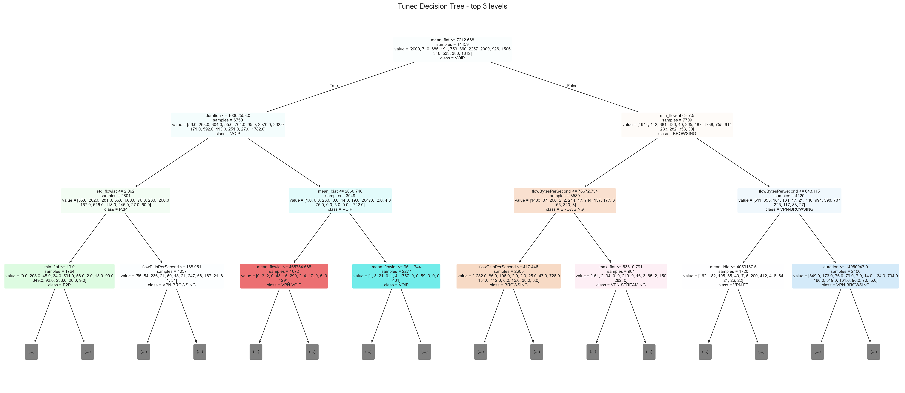
|--- mean_fiat <= 7212.67 | |--- duration <= 10062553.00 | | |--- std_flowiat <= 2.06 | | | |--- min_fiat <= 13.00 ...
Decision Tree eke loku wasiya thamai model eka white-box eka. Root split eka mean_fiat, eka permutation importance eke #2 feature eka. Ithin results ekata ekangai. Network admin kenekata “ai me flow eka VOIP kiyala kiwwe” kiyala rules walin pennanna puluwan.
17Time windows 4 ma (15/30/60/120s)
15s eke hoyagaththa ekama best settings walin 30s, 60s, 120s datasets walath tree ekak train karala test karanawa.
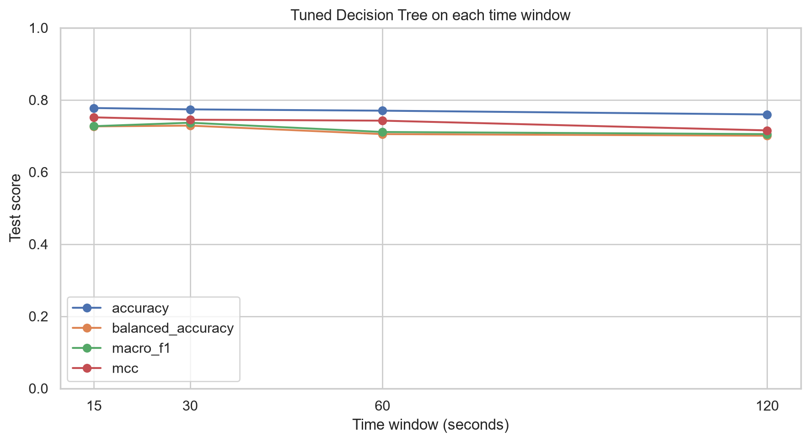
| Timeout | Train rows | Accuracy | Macro F1 | MCC |
|---|---|---|---|---|
| 15s | 14,459 | 0.778 | 0.727 | 0.752 |
| 30s | 10,910 | 0.774 | 0.737 | 0.745 |
| 60s | 11,783 | 0.770 | 0.711 | 0.743 |
| 120s | 7,671 | 0.760 | 0.705 | 0.716 |
Settings okkotama ekamai nisa compare eka fair. Podi windows (15s, 30s) hondai. 120s wala data adui (rows 7,671), ithin score eka adu wenawa. Learning curve eke dakapu “more data helps” kiyana eka mekenuth confirm wenawa. Wenasa podi nisa model eka time window eka wenas kalath robust.
18Team eke Logistic Regression ekka compare
Team eka save karapu logistic_regression_timeout_comparison.csv eka read karala, api Decision Tree results ekka ekata chart ekak hadanawa. Models dekama ekama train/test files use kale.
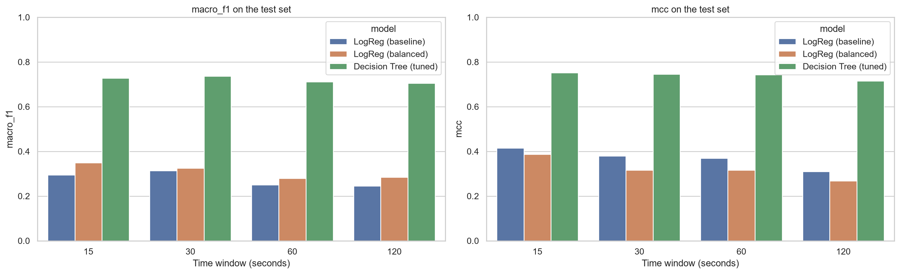
| Model | 15s | 30s | 60s | 120s |
|---|---|---|---|---|
| LogReg (baseline) | 0.295 | 0.314 | 0.251 | 0.245 |
| LogReg (balanced) | 0.349 | 0.324 | 0.280 | 0.285 |
| Decision Tree (tuned) | 0.727 | 0.737 | 0.711 | 0.705 |
- LogReg ekata thiyenne linear decision boundary ekak witharai. Me data eke classes features space eke non-linear widiyata wenas wela thiyenne.
- Features heavily skewed (udaharana: duration microseconds walin millions). Scaling kalath LogReg ekata ewa amarui. Tree ekata thresholds witharai one nisa prashnayak na.
- Ithin macro F1 eka ~2 gunayak wadi wela.
19Model eka save karanawa
joblib.dumpekenmodel/decision_tree_14class_15s.joblibfile eka save karanawa.model_info.jsoneke best params, depth, leaves, CV score, test scores, features, classes okkoma save karanawa.- Ita passe model eka aye load karala ekama score eka enawada kiyala check karanawa.
model = joblib.load("reports/results/decision_tree/model/decision_tree_14class_15s.joblib")
model.predict(new_data[FEATURES])
Aye train karanne nathuwa model eka deployment ekakata hari, aluth data predict karanna hari use karanna puluwan. .gitignore eke *.joblib thiyena nisa model file eka git ekata yanne na, anith results okkoma yanawa.
20–21Final summary saha conclusion
Main numbers print karala, save karapu files 36 ma list karanawa. Conclusion markdown eke results therum ganna widiya liyala thiyenawa.
- Decision Tree eka 14-class traffic classification walata macro F1 0.727, MCC 0.752 gaththa. LogReg ekata wada ~2 gunayak hondai.
- Group-aware CV eka nisa leakage na. CV std 0.008 nisa model eka stable.
- Tuning eken overfitting gap eka bhagayakin adu kala (0.249 → 0.114), saha tree eka 4 gunayak podi kala.
- Learning curve eka anuwa thawa data thibboth model eka thawa hondai.
- Amaruma dewal: normal vs VPN versions (BROWSING ↔ VPN-BROWSING) saha data adu classes (MAIL, STREAMING).
- Wadagath features:
flowBytesPerSecond,mean_fiat,duration.
★Limitations saha future work
- Single tree = high variance: data podi wenasakata tree eka wenas wenna puluwan. Ensemble methods (Random Forest, Gradient Boosting) walin meka adu karanna puluwan (team eke wena members eka karanawa).
- Time-based features witharai: normal vs VPN wenas karanna packet size wage features thibboth hondai.
- Imbalance:
class_weight="balanced"tuning eke try kala, eth best eka une None. SMOTE wage oversampling try karanna puluwan. - Conflict rows (features samaana, label wenas) model ekakata kisima widiyakin hari karanna be. Ithin 100% accuracy ganna be.
- Best settings 15s eke witharai tune kale. Hama window ekakatama wenama tune kaloth tikak wadi wenna puluwan.
?Evaluation eke ahanna puluwan prashna
Ai accuracy newei macro F1 main metric eka?
Data eka imbalanced. Accuracy eka loku classes (VOIP, BROWSING) walata bias wenawa. Macro F1 eka class 14 ema samaana weight dena nisa podi classes (MAIL) waradunoth eka penenawa.
Cross validation eka karanne ai? Normal KFold newei ai?
Single train/validation split ekak luck eka anuwa wenas wenna puluwan. 5-fold CV eken folds 5 ka average saha std ekak gannawa. StratifiedGroupKFold gaththe: stratified (class ratio samaanai) + group (samaana features thiyena rows folds dekakata yanne na → no leakage).
Test set eka tuning walata use kalada?
Na. Tuning, CV, learning curve, validation curves okkoma training data eke witharai. Test set eka use kale final evaluation eke ekaparai. Ithin result eka unbiased.
Overfitting kiyanne mokakda? Oya eka kohomada adu kale?
Model eka training data eka mathaka thiyagena aluth data walata hari nathi wena eka. Baseline eke train 0.99, val 0.74. max_depth, min_samples_leaf, ccp_alpha (pruning) saha max_features tune karala gap eka 0.114 ta adu kala.
Baseline eka test eke wadi nam ai tuned eka thoragaththe?
Model selection eka CV walin karanna one. Test eka balala thoruwoth eka leakage. CV eke tuned eka hondai, tree eka 4 gunayak podi, overfitting adui. Test difference eka (0.027) single tree eke normal variance eka athule.
ccp_alpha kiyanne mokakda?
Cost-complexity pruning parameter eka. Tree eka hadala passe, wadi watinakamak nathi branches kapala danawa. Value eka wadi unoth tree eka podi wenawa. 0.0002 best eka une. Validation curve eken eka pennanawa.
Gini saha entropy athara wenasa?
Dekama node ekaka “impurity” eka (classes keeyak mix welada) manina widi. Gini eka calculate karanna tikak fast. Practically results samaanai. Tuning eke gini best una.
Ai feature scaling karanne nathi?
Tree eka thresholds (≤) witharai use karanne. Monotonic transformation ekak (scaling wage) kalath split eka wenas wenne na. Ithin scaling one na.
Learning curve eken mokakda therum ganne?
Validation score eka data wadi wena kota thawa udata yanawa. Ithin more data would help. Tuned eke train–val gap eka podi nisa overfitting adu wela.
Model eka amaruma waradi karanne mona classes walada? Ai?
BROWSING ↔ VPN-BROWSING, VPN-CHAT ↔ VPN-FT. VPN encryption eken timing pattern eka godak wenas wenne na nisa time-based features walin witharak ewa wenas karana eka amarui.
Permutation importance saha impurity importance athara wenasa?
Impurity eka training eke split walin ganna built-in measure eka. Eka unique values godak thiyena features walata bias wenna puluwan. Permutation eka test set eke feature eka shuffle karala score drop eka manina nisa wadi reliable.
Ai RandomizedSearch, GridSearch newei?
Combinations ~144,000k thiyenawa. Grid eka okkoma try karanna ona. Random search eka 150 kin hoda region eka hoyagannawa, eka efficient.
Me numbers okkoma ganne reports/results/decision_tree/ eke save wela thiyena results walin (SEED = 42).